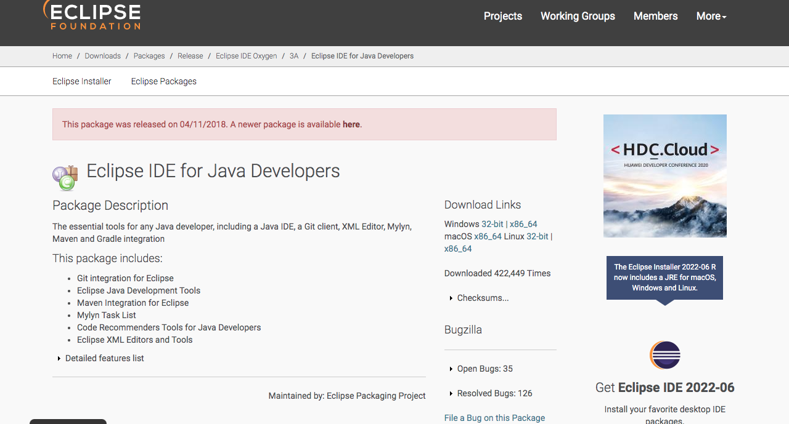
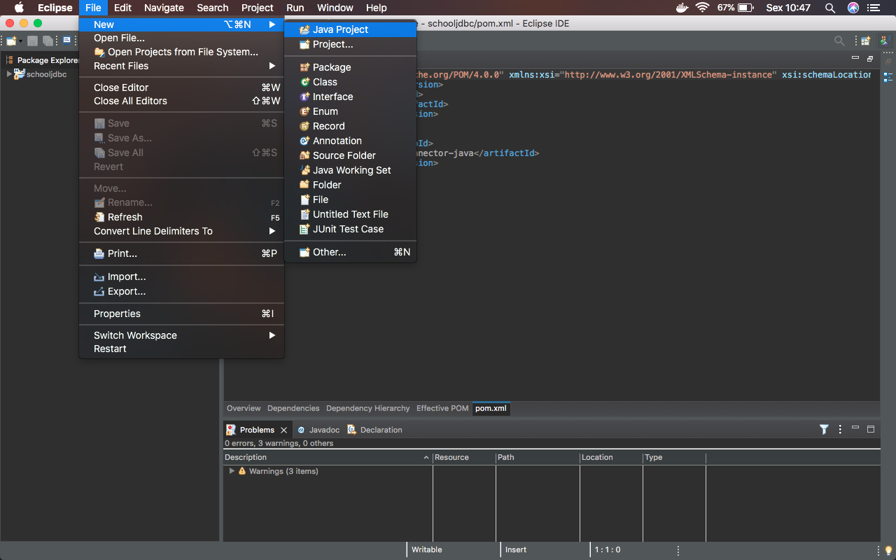
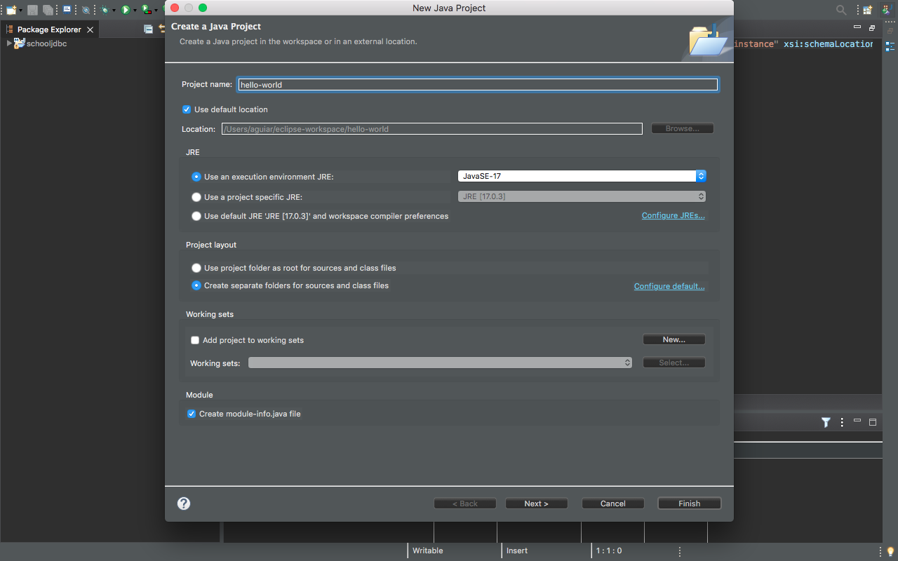
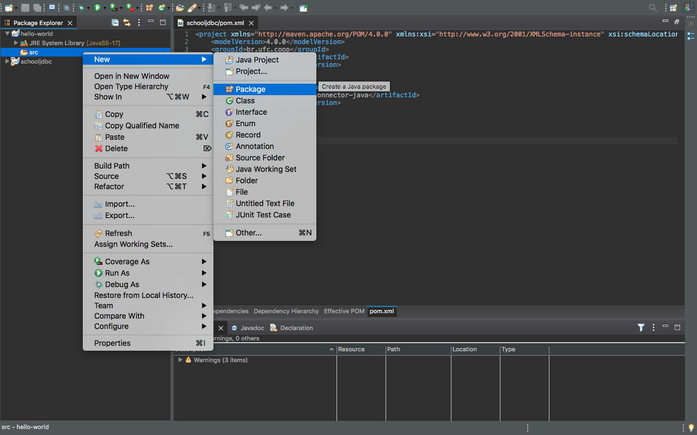
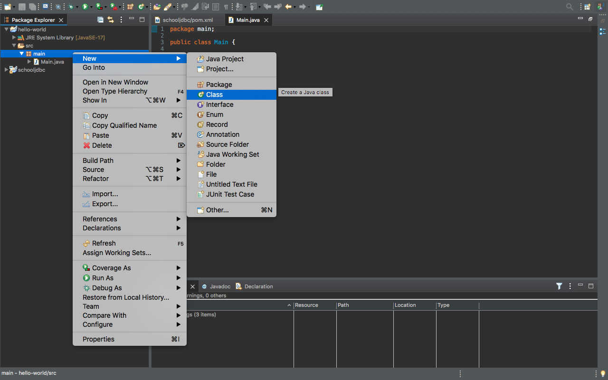
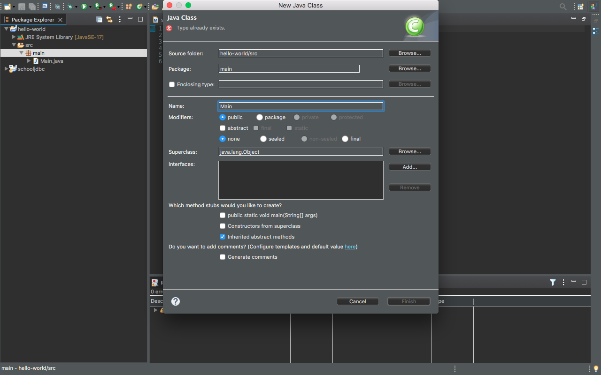

O que é JavaFX
A plataforma de solftware multipmídia da Sun Microsystems chamada JAVAFX é um software totalmente baseado em Java e que pode ser executada em vários dispositivos diferentes.
É uma ferramenta poderosa JAVA e está substituindo o AWT e o Swing, roda em cima do Prisma( que também conhecido como O novo motor gráfico de alto desemprenho) e foi lançada inicialmente no ano de 2007, na versão 1.0, mas só foi disponibilizada em dezembro de 2008 pela Sun.
Em sua página oficial existe uma definição da JavaFX: JavaFX é uma plataforma de aplicativo cliente de código aberto de próxima geração para sistemas desktop, móveis e embarcados construídos em Java. É um esforço colaborativo de muitos indivíduos e empresas com o objetivo de produzir um kit de ferramentas moderno, eficiente e completo para o desenvolvimento de aplicativos rich client.
Instalação e conguração do ambiente de desenvolvimento no MacOs
Vamos direto ao assunto, para voçê iniciar o processo, voçê precisa que esteja instalado na sua máquina:
- Eclipse (Não coloco uma obrigatoriedade de versão).
- SDK da JavaFX(Pode baixar no site oficial da Oracle).
Após o download, processo de instalação é bem semelhante aos demais: Clique em Next até concluir o processo.
Página Eclipse download.

Página JavaFX download.

Com ambos instalados, agora vamos fazer uma aplicação básica de JavaFX.
1 - No eclipse, acesse File > New > Java Project, dê um nome, usei o hello-world, após isso Finish.


2 - Sobe seu projeto, crie um novo pacote(com o nome main), clicando com o botão direito e New > Package > Finish.

3 - Em cima do pacote, clique com o botão direito, acesse o menu New > Class com o nome Main, após isso Finish.


Agora com ambos instalados na sua maquina, voçê precisa configurar a bilbioteca JAVAFX, logo após isso, já se pode compilar e trabalhar com a ferramenta
1 - No eclipse, acesse Eclipse > Preferencias > Java > Biuld Path > User Libraries, busque o local que instalou o JavaFX, após isso Finish.


2 - clique em Add JARS > Package > Finish

3 - Em cima do pacote, clique com o botão direito, acesse o menu New > Class com o nome Main, após isso Finish.